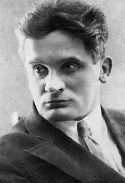

Народився 19 лютого (3 березня) 1899 року в Єлисаветграді. Батько, збіднілий польський дворянин, був акцизним чиновником. Завдяки матері атмосфера в сім'ї була пройнята духом католицизму. У 1902 році сім'я переїхала до Одеси. У спогадах Олеша писав: "В Одесі я навчився вважати себе близьким до Заходу. У дитинстві я жив як би в Європі". Насичене культурне життя міста сприяло вихованню майбутнього письменника. Ще навчаючись у гімназії, Олеша почав писати вірші. Вірш Кларімонда (1915) було опубліковано в газеті "Південний вісник". Після закінчення гімназії в 1917 році вступив до університету, де протягом двох років вивчав юриспруденцію. В Одесі разом з В. Катаєвим, Е. Багрицьким, І. Ільфом утворив групу "Колектив поетів".
У роки Громадянської війни Олеша залишався в Одесі, де в 1919 році пережив смерть улюбленої сестри Ванди. У 1921 році виїхав з голодної Одеси до Харкова, де працював як журналіст і друкував вірші в періодичній пресі. У 1922 році батьки Олеши отримали можливість емігрувати до Польщі.
У 1922 році Олеша переїхав до Москви, писав фейлетони та статті, підписуючи їх псевдонімом Зубило, для газети залізничників "Гудок", у якій в той час співпрацювали М. Булгаков, Катаєв, Ільф, Є. Петров та інші письменники. У 1924 році Олеша написав свій перший твір прозою — роман-казку "Три товстуни" (опубліковано 1928 році, ілюстрації М. Добужинського), присвятивши його своїй дружині О. Г. Суок. Жанр казки, світ якої природно-гіперболічний, відповідав потребам Олеши писати метафоричну прозу (у колі літераторів його називали "королем метафор"). Роман "Три товстуни" був пройнятий романтичним ставленням автора до революції. Сприйняття революції як щастя властиво у "Трьох товстунах" всім позитивним героям — циркачці Суок, гімнасту Тібулу, зброяру Просперо, доктору Гаспару Арнер. Казка викликала величезний читацький інтерес і одночасно скептичні відгуки офіційної критики ("призову до боротьби, праці, героїчного прикладу діти Країни Рад тут не знайдуть"). Діти і дорослі захоплювалися фантазією автора, своєрідністю його метафоричного стилю. У 1930 році на замовлення МХАТу Олеша зробив інсценування "Трьох товстунів", яка до наших днів успішно йде в багатьох театрах світу. Роман і п'єса переведені на 17 мов. За казкою Олеші поставлений балет (муз. В. Оранського) і художній фільм (реж. А. Баталов). Публікація в журналі "Красная новь" роману "Заздрість" (1927) викликала полеміку у пресі. Головний герой роману, інтелігент, мрійник і поет Микола Кавалеров, став героєм часу, своєрідною "зайвою людиною" радянської дійсності. На противагу цілеспрямованому й успішному ковбаснику Андрію Бабічева, невдаха Кавалеров не виглядав переможеним. Небажання і неможливість досягати успіху в світі, що живе за нелюдськими законами, робили образ Кавалерова автобіографічним, про що Олеша написав у своїх щоденникових записах. У романі "Заздрість" Олеша створив метафору радянського ладу — образ ковбаси як символ благополуччя. У 1929 році автор написав за цим романом п'єсу "Змова почуттів". Автобіографічним є і образ головної героїні п'єси "Список благодіянь" (1930), актриси Олени Гончарової. У 1931 році перероблену за вказівкою цензури п'єсу почав репетирувати Вс.Мейерхольд, проте спектакль незабаром був заборонений. Список благодіянь фактично був "списком злочинів" радянської влади, в п'єсі було висловлено ставлення автора до навколишньої дійсності — до розстрілів, до заборони на приватне життя і на право висловлювати свою думку, до безглуздості творчості в країні, де зруйновано суспільство і т.п . У щоденнику Олеша записав: "Все спростовано, і все стало несерйозно після того, як ціною нашої молодості, життя — встановлена єдина істина: революція". У 1930-і роки на замовлення МХАТу Олеша писав п'єсу, в основі якої лежала, заволодівша ним думка про розпач і злидні людини, у якого забрали все, крім прізвиська "письменник". Спроба виразити це відчуття була зроблена Олешею в його промові на Першому з'їзді радянських письменників (1934). П'єса про злиденного не була завершена. За збереженими чернетками режисер М. Левітін поставив в 1986 році у московському театрі "Ермітаж" спектакль "Жебрак, або Смерть Занда". Надалі Олеша не писав цільних художніх творів. У листі дружині він пояснив свій стан: "Просто та естетика, яка є істотою мого мистецтва, зараз не потрібна, навіть ворожа — не проти країни, а проти банди, яка встановила іншу, підлу, антихудожню естетику". Про те, що дар художника не був ним втрачений, свідчать численні щоденникові записи Олеші, що володіють якостями справді художньої прози. У роки сталінських репресій було знищено багато друзів Олеши — Мейєрхольд, Д.Святополк-Мірський, В. Стеніч, І. Бабель, В. Нарбут та ін; сам він дивом уникнув арешту. У 1936 році на публікацію творів Олеши і згадку його імені у пресі була накладена заборона, знята владою тільки в 1956 році, коли була видана книга "Вибрані твори", перевидані "Три товстуни" і частково опубліковані в альманасі "Літературна Москва" щоденникові записи "Ні дня без рядка". У роки війни Олеша був евакуйований до Ашхабада, потім повернувся до Москви. Письменник з гіркотою називав себе в післявоєнні роки "князем "Націоналя", маючи на увазі свій спосіб життя. "Невроз епохи", який гостро відчував письменник, висловився в невиліковному алкоголізмі. Тематика його щоденників в 1950-і роки дуже різноманітна. Олеша писав про зустрічі з Пастернаком, про смерть Буніна, про Утьосова і Зощенко, про власну минулу молодість, про гастролі "Комеді Франсез" у Москві і т.д. Помер Олеша в Москві 10 травня 1960 року.